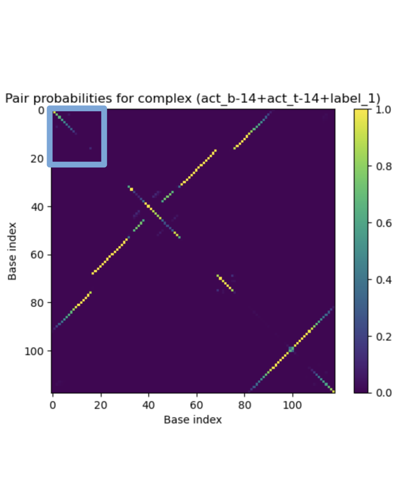
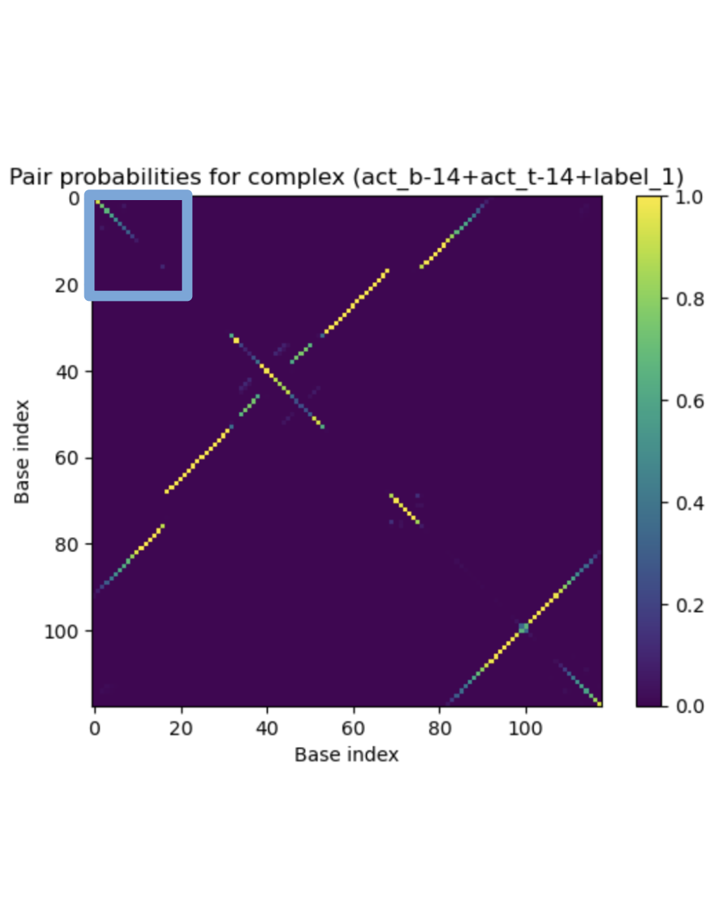
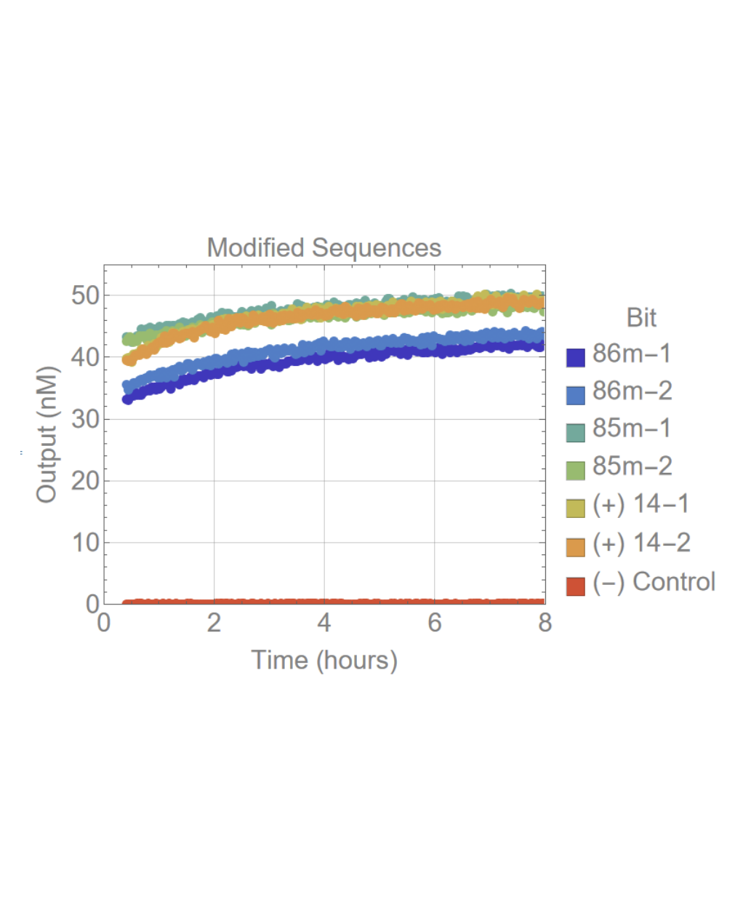
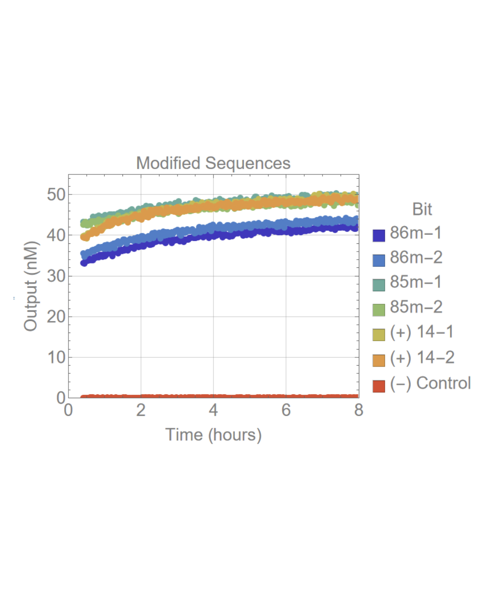

At this internship, my partner and I worked with Professor Lulu Qian as well as her PhD students and postdocs in the field of DNA nanotechnology to improve the performance of a supervised learning DNA-based winner-take-all neural network, the subject of a postdoc’s thesis chapter.
Over the course of three months, we learned the basics of DNA nanotechnology, programmable biochemical systems capable of making decisions, and the implementation of neural networks in DNA. My partner and I then noticed an issue that would cause the network to perform suboptimally when classifying patterns. We used Python, NUPACK, Mathematica, and Wolfram as well as various experiments to find and test a working solution to this issue, then presented and reported our findings.

 



 
